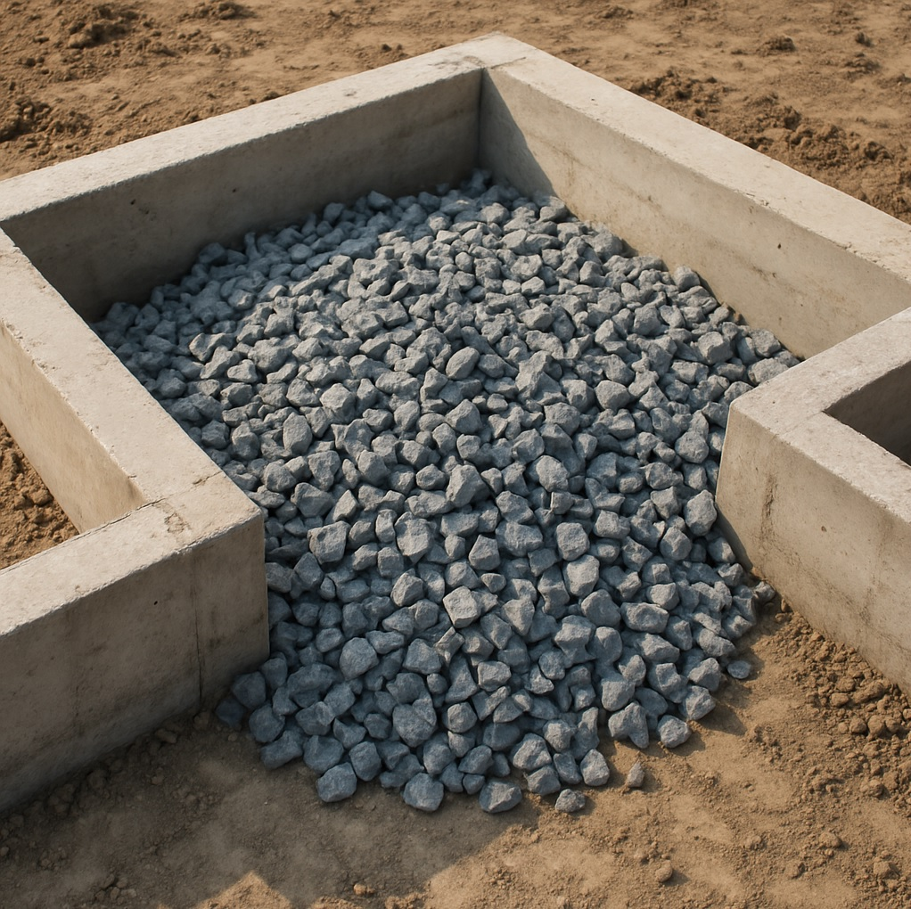

TONNY — ваш надійний постачальник щебеню у Львові
Компанія TONNY — це надійний постачальник гранітного щебеню, піску та відсіву з власних кар'єрів.
Наші виробничі потужності включають сучасну спецтехніку, контроль якості продукції та сертифікацію.
Загальна інформація
TONNY — це компанія повного циклу. Маємо власні кар'єри, навантажувальну техніку, залізничний та автомобільний транспорт. Вся продукція відповідає високим стандартам міцності, морозостійкості, екологічності.
Ми продаємо щебінь як на вагу, так і фасований у мішках.
Сфера застосування
Щебінь — це один із ключових будівельних матеріалів, який широко використовується в різних сферах будівництва. Він є продуктом дроблення твердих порід, таких як граніт, вапняк, гравій або шлак. Завдяки своїм універсальним властивостям і доступності, щебінь став незамінним у багатьох будівельних процесах.
Його застосовують у всіх сферах будівництва:
-
Бетонування, фундаментні роботи
Для забезпечення міцності та стійкості фундаментів використовують щебінь середніх фракцій. Він надає конструкції жорсткості та сприяє рівномірному розподілу навантаження.
Цей матеріал є основним заповнювачем у бетонних сумішах. Він забезпечує високу міцність, довговічність і зносостійкість готового бетону.
 -
Під час прокладання доріг та автомагістралей
Щебінь є ключовим матеріалом у будівництві доріг. Його використовують як основу під асфальтобетонне покриття та для створення шарів дорожнього полотна.
-
Приватне будівництво також неможливе без використання щебеню
Дренажні системи
Щебінь великих фракцій (від 40 мм) використовується для створення дренажних систем, що забезпечують відведення води та запобігають підтопленням.

-
Дрібні фракції щебеню застосовують для декорування садів, доріжок, клумб і водойм. Його також використовують для створення габіонів і штучних схилів.